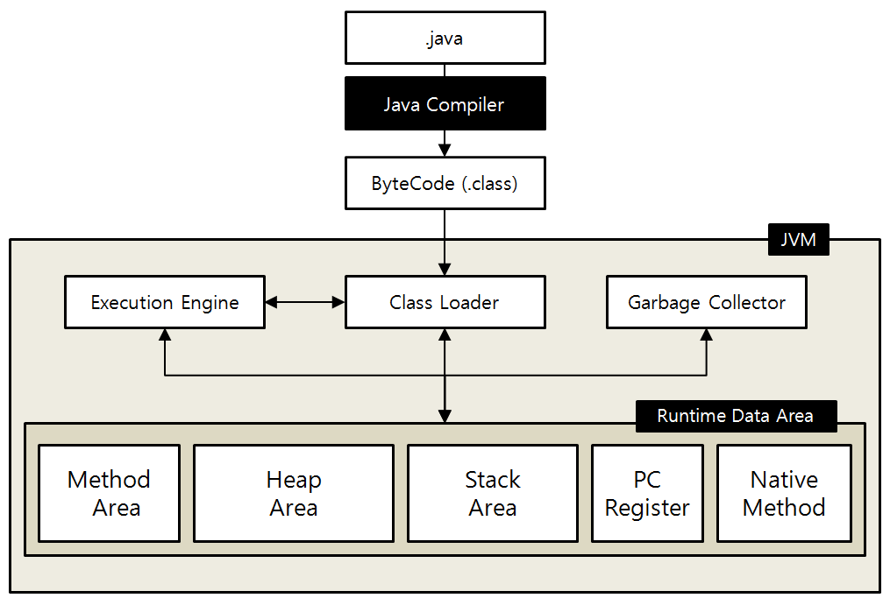

Java 면접 질문 정리(2)
자바 면접 질문 정리2
1.JVM의 동작과정 및 원리
JVM이란, 자바 가장 머신(Java Virtual machine)의 약자로, 컴퓨터가 자바 바이트 코드를 운영 체제에 맞게 실행시키는 역활을 수행합니다
JVM은 OS의 종류에 상관없이 자바 파일을 실행할 수 있도록 중재자 역활을 합니다
JVM 동작 과정
- 프로그램이 실행되면 JVM은 OS로부터 필요한 메모리를 할당 받습니다
- 자바 컴파일러(javac)가 자바 소스코드(.java)를 읽어들여 자바 바이트코드(.class)로 변환 시킵니다
- 클래스로더(Class Loader)를 통해 클래스 파일들을 JVM으로 로딩합니다
- 로딩된 class파일들은 실행엔진(Execution Engine)을 통해 해석됩니다
- 해석된 바이트코드는 Runtime Data Areas에 배치되어 실직적인 수행이 이루어집니다

- Class Loader는 자바 컴파일러가 .java 파일을 컴파일하여 .class파일(바이트 코드)이 생성되면, 이 클래스 파일들을 엮어 Runtime Data Area 형태로 메모리에 적재하는 역활을 합니다
- Execution Engine는 클래스 로더를 통해 JVM 내의 Runtime Data Area 에 배치된 클래스 파일들을 명령어 단위로 읽어서 실행합니다. 메모리에 적재된 클래스들을 기계어로 변경해 명령어 단위로 실행하는 역활을 합니다
- Garbage Collector는 Heap 메모리 영역에서 생성된 객체들 중에 참조되지 않는 객체들을 탐색 후 제거하는 역활을 합니다
-
Runtime Data Area는 JVM이 프로그램을 수행하기 위해 OS로 부터 별도로 할당받은 메모리 공간을 말합니다
Runtime Data Area는 크게 5가지 영역으로 나눌 수 있습니다
- 모든 스레드에서 공유하는 영역
- Method Area
- 메서드 영역에서 자바 프로그램의 클래스 코드,변수 코드, Static, Final 변수등이 생성 됩니다
- Heap Area
- New 키워드로 생성한 객체(instance)가 저장되는 영역
- 동적으로 생성된 객체와 배열이 저장되는 곳으로 Garbage Collection의 대상이 되는 영역 입니다
- Stack Area
- 지역 변수, 파라미터등이 생성되는 영역, 동적으로 객체를 생성하면 실제 객체는 Heap에 할당되고 해당 래퍼런스만 Stack에 저장된다
- Stack은 스레드별로 독자적으로 가진다
- Heap에 있는 객체가 Stack에서 참조 될 수 없는 경우 가비지 컬랙터(GC)의 대상이 된다
- 각 스레드 별로 생성되는 영역
- PC Register
- 현제 쓰레드가 실행되는 부분의 주소와 명령을 가지고 있다.(CPU의 PC Register와 다르다)
- Natice Method
- 자바와 언어로 작성된 네이티브 코드를 위한 메모리 영역
2.가비지 컬랙터(GC)의 종류와 동작 과정, 원리
가비지 컬랙터란, 힙 메모리 관리를 위해, 참조되고 있지 않은 객체들을 메모리에서 삭제하는 역활을 합니다.
어떻게 사용하지 않는다고 판단하고 제거되는가?
객체는, 힙영역에 저장되고, 스택 영역에 이를 가르키는 주소값이 저장되는데
힙영역에서 자시을 가르키는 주소값이 없으면, 참조되고 있지 않다고 판단합니다
- GC가 동작하면, GC Root부터 객체를 찾고, 그 객체가 참조하는 객체를 스택영역에서 찾아 mark 합니다
- Mark되지 않은 객체는 접근할 수 없다고 판단하여 제거합니다
GC 동작 과정
- 객체가 생성되면 메모리를 young 영역에 저장합니다
- 객체를 최초 생성하면 Young 영역에 Eden 영역에 위치합니다
- Eden 영역에서 Minor GC가 발생하면, 참조중인 객체는 1번 Survivor 영역으로 이동합니다.
- 1번 Survivor영역에서 Miner GC가 발생하면, 참조중인 객체는 2번 Survivor영역으로 이동하고 Survivor영역은 비게 됩니다.
- Young 영역에서 오래 살아남은 객체는 Old영역으로 이동하게 됩니다.
- Old 영역에 있는 객체는 Major GC가 발생했을 때, 참조 여부에 따라 유지되거나 제거 됩니다
GC 알고리즘 종류
- Serial GC
- 가장 단순한 방식인 GC입니다
- 싱글 스레드로 작동하고, 그만큼 느립니다
- Mark-sweep-compact 알고리즘(mark하고 , sweep(지우고)하고, compact(빈공간을 채워 넣는다)
- 적은 메모리와 CPU 코어 개수가 적을때 적합합니다
- Paraller GC
- Java8의 deault GC입니다
- Serial GC와 알고리즘은 같지만 GC를 처리하는 스레드가 여러개 입니다
- 메모리와 코어가 충분할 떄 적합합니다
- Paraller Old GC
- Paraller GC는 Young영역에서만 멀티스레드를 사용지만 이건 Old 영역까지 멀티스레드를 사용합니다
- Paraller GC에서 Old GC 알고리즘을 개선한 버전입니다
GC의 장단점
- GC의 장점
- 메모리 누수를 막을 수 있습니다
- 해체된 메모리에 접근하는 오류와, 해체된 메모리를 한번 더 해체하는 이중 해체를 막을 수 있습니다
- GC의 단점
- GC의 메모리 해체 타이밍을 개발자가 정확하게 알기 힘듭니다
- 실시간이 강조되는 프로그램의 경우 GC에게 메모리를 맡기는 것은 알맞이 않을 수 있습니다
정적타입 언어와 동적 타입 언어의 차이
타입(자료형)의 결정을 컴파일 할때 결정한다면 정적 타입 언어(Java, C, C++)
런타임 과정에서 결정한다면 동적 타입언어(Python, JavaScript, Ruby) 입니다
정적타입, 동적타입 언어의 장단점
-
정적 타입 언어의 경우
컴파일 때 미리 타입을 결정하기 때문에 실행속도가 빠르고 타입 에러로 인한 문제점을 초기에 발견할 수 있어 타입의 안정성이 높습니다
하지만, 매번 코드 작성시 변수형을 결정해줘야 하는 번거로움이 있습니다
-
동적 타입 언어의 경우
런타임까지 타입에 대한 결정을 끌고 갈 수 있기때문에 유연성이 높고, 컴파일시 타입을 명시해주지 않아도 되기 때문에 빠르게 코드를 작성할 수 있습니다
하지만, 실행 도중에 변수에 예상치 못한 타입이 들어와 타입에러가 발생할 수 있습니다
동적타입 언어는 런타임 시 확일할 수 밖에 없기 때문에, 코드가 길고 복잡해질 경우 타입 에러를 찾기가 어려워 집니다
기본 데이터타입과 참조 데이터 차이
기본 데이터타입(Primitive Type)
종류는 byte, short, char, int , float, double, boolean이 있습니다.
참조 데이터(Reference Type)
기본 데이터 타입을 제외하고는 모두 참조 데이터 타입입니다
- 참조 데이터 타입 종류는 class, array, interface, Enumeration이 있습니다
- 참조 타입은 값이 저장된 곳(Heap)의 주소를 Stack영역에 저장합니다
- 참조 타입은 4 byte 크기의 주소값이 들어 갑니다